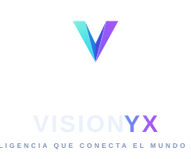
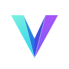

Identidad visual
Manual de Marca
Las reglas para usar la identidad de VisionYX de forma coherente y profesional en cualquier medio: digital, impreso o una sola tinta.
Logo principal
El lockup horizontal es la versión preferente. Úsalo siempre que haya espacio suficiente.
 Horizontal · fondo oscuro
Horizontal · fondo oscuro
Apilado · usos compactosVariantes
Elige la variante según el fondo. Nunca fuerces el color sobre fondos que reduzcan el contraste.

ColorIsotipo / Favicon
El isotipo (la “V” facetada) funciona solo cuando el espacio es mínimo: favicon, app, avatar de redes o sello.
Paleta de color
El degradado de marca va de cian a violeta. Los neutros oscuros sostienen el contraste.
Tipografía
Orbitron para la marca y los titulares; Exo 2 para texto e interfaz.
Área de protección y tamaño mínimo
Deja alrededor del logo un margen libre igual a la altura de la “V”. Tamaño mínimo del isotipo: 16 px (digital) / 8 mm (impreso).
- ◆ Respeta el área de protección en todos los lados.
- ◆ Mantén la proporción original (no estirar).
- ◆ Usa el isotipo solo cuando no quepa el lockup.
Usos correctos e incorrectos
✓ Hazlo
- ◆ Usa las variantes provistas sin modificarlas.
- ◆ Usa color sobre fondos oscuros; mono negro sobre claros.
- ◆ Garantiza contraste y legibilidad.
✕ Evita
- ✕ Cambiar los colores o aplicar otros degradados.
- ✕ Deformar, rotar o añadir sombras/contornos.
- ✕ Colocarlo sobre fondos con poco contraste.
Descargas
Archivos listos para usar. SVG para web y diseño; PNG de alta resolución para impresos, documentos y redes.
Logo (lockup)
{kind=link}
{kind=link}
{kind=link}
{kind=link}
{kind=link}
Isotipo (V)
{kind=link}
{kind=link}
{kind=link}
{kind=link}
Íconos / redes (PNG)
{kind=link}
{kind=link}
{kind=link}
{kind=link}